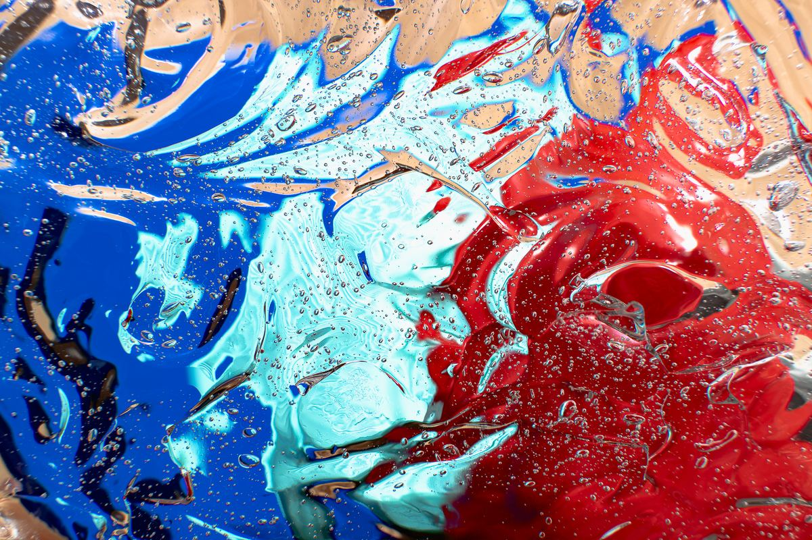
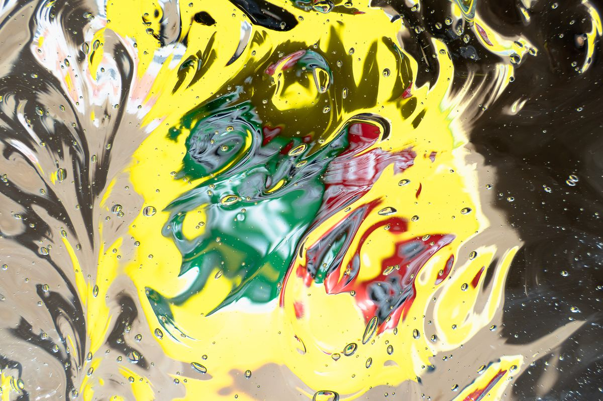
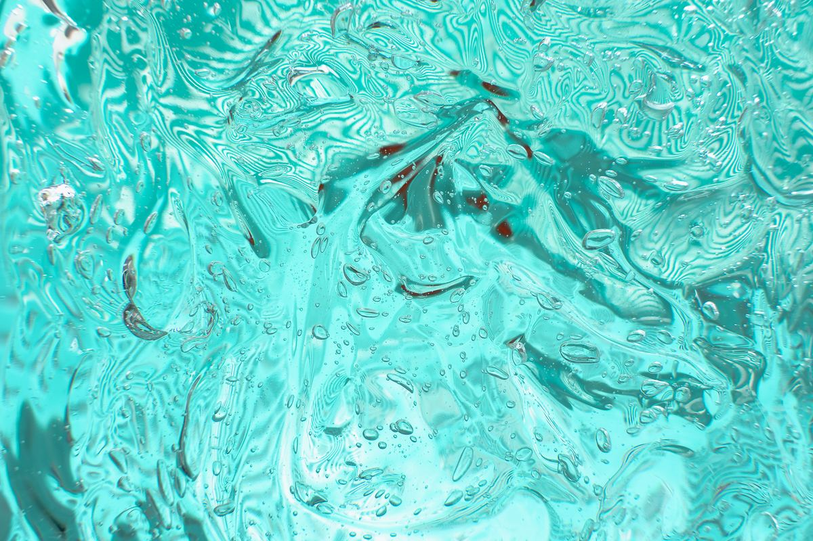
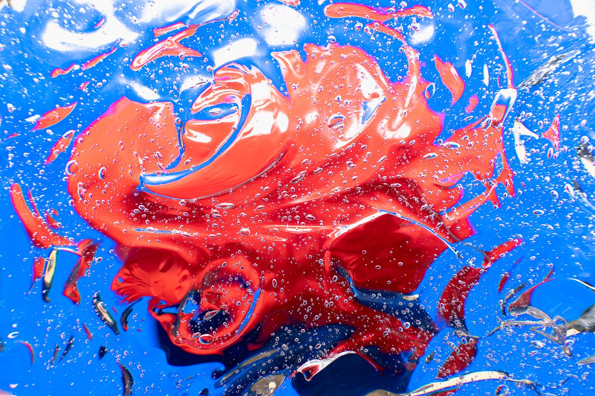
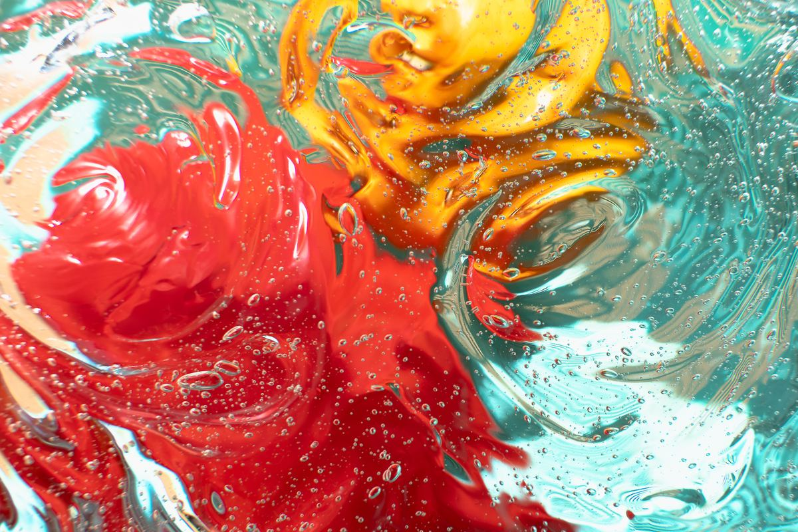

«Los colores son acciones de la luz;
acciones y pasiones.»GOETHE · Teoría de los colores, 1810





↓
«Los colores son acciones de la luz;
acciones y pasiones.»GOETHE · Teoría de los colores, 1810




